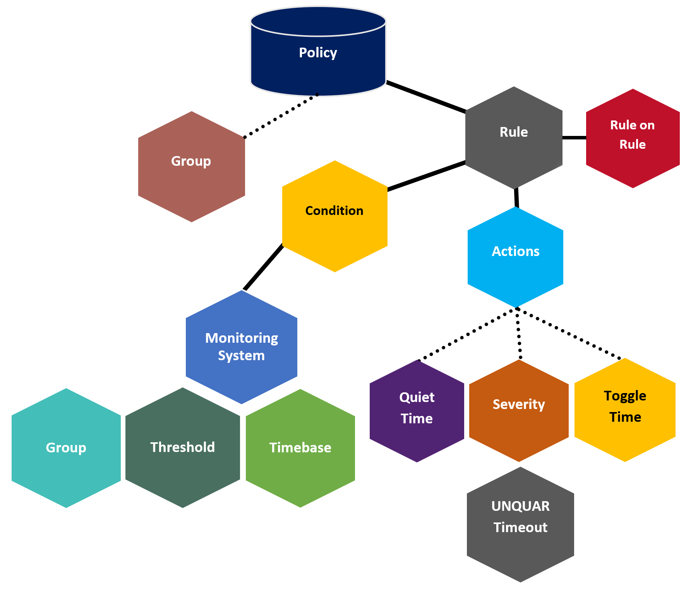

The Monitoring and Alerting Policy Suite (MAPS) is a storage area network (SAN) health monitoring and alerting application with the capability of early fault detection and isolation.
MAPS helps the SAN administrators perform the following tasks:
Monitor the health and performance of the SAN infrastructure proactively to ensure the application uptime and availability by leveraging predefined and custom policies and rules.
Automate the policy-based, real-time monitoring and alert thresholds on a port or group basis.
Configure each MAPS-enabled switch to constantly monitor itself for potential faults and automatically alert you to problems before they might become failures.
Configure an entire fabric at one time, using common rules and policies, or custom policies for specific ports or switch elements, with simplified fabric-wide threshold configuration, monitoring, and alerting.
Simplify fabric configuration with a common policy and remediate the conditions that require attention.
Automatically, take preventive action such as fence, toggle, quarantine, unquarantine, and ha_failover to avoid service disruption.
Use the existing FC MAPS features and apply them to monitor Ethernet ports in the IP Storage Logical Switch (IPS LS).
MAPS is shipped with predefined rules, groups, and policies. However, you can create custom rules, groups, and policies. MAPS enables the cloning of predefined rules, groups, and policies to facilitate monitoring. Predefined rules and groups are system-specific, and each system has its own rules and groups. All MAPS configuration is persistent, is retained across reboots or HA failovers, and can be uploaded and downloaded.
The following diagram describes the basic elements of MAPS and how they are structurally connected.
Figure: MAPS Elements

The dotted lines in the diagram represent the logical association between the MAPS elements. The black lines represent the physical association between MAPS elements; configuring these elements is mandatory to perform the monitoring. For more information about MAPS basic elements, see MAPS Basic Elements.